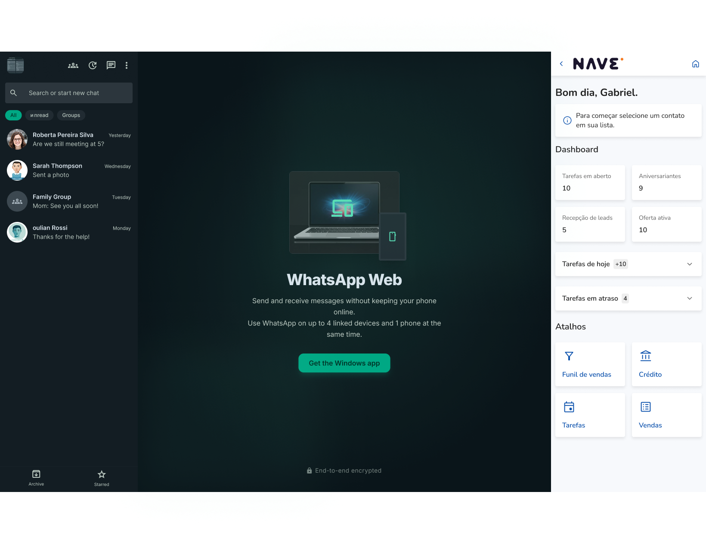
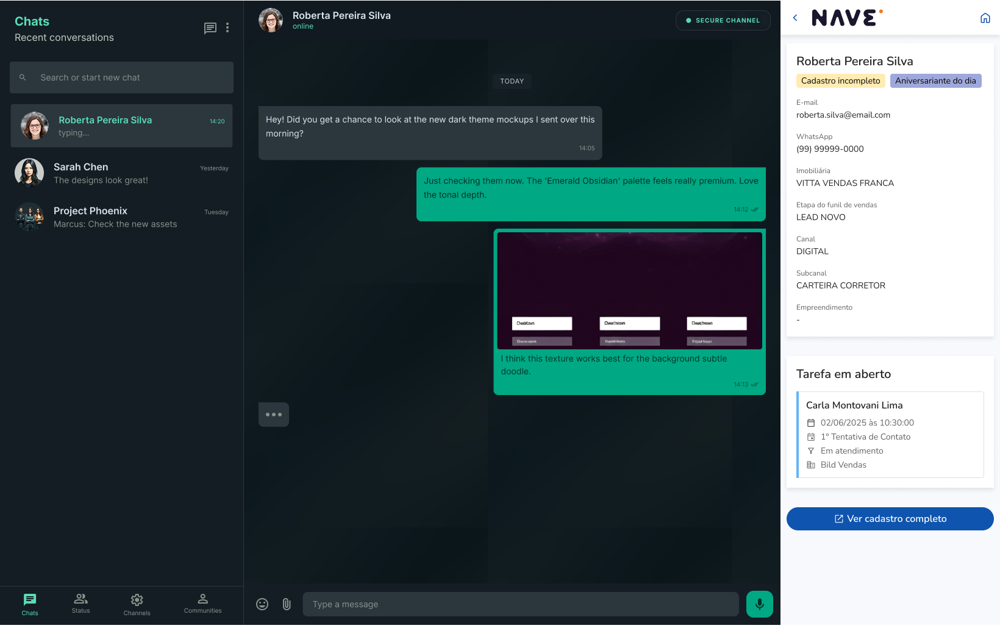

Extensão de navegador
NaveZap: trazendo os dados do CRM para dentro do WhatsApp do corretor.
Como o benchmarking e a ideação de uma extensão de navegador, conduzidos por mim a partir de um NPS do time de produto, eliminaram a troca constante de abas entre WhatsApp e a plataforma no atendimento diário dos corretores.
Contexto — o problema
Uma pesquisa de NPS conduzida pelo time de produto revelou uma dor recorrente dos corretores: para visualizar informações básicas de um contato durante uma conversa, era preciso sair do WhatsApp, abrir a plataforma (Nave), buscar o cliente e voltar — múltiplos passos repetidos dezenas de vezes ao dia, quebrando o ritmo do atendimento.
A partir desse dado, conduzi o benchmarking e a ideação da solução — uma extensão de navegador que injeta as informações do CRM diretamente na interface do WhatsApp Web — mantendo rodadas de alinhamento constantes com devs e PM envolvidos no projeto para garantir viabilidade técnica e escopo compartilhado.
Solução — fluxo da extensão
Mapeei os principais estados da extensão, cobrindo desde o primeiro acesso até o uso diário:
Usuário não logado
Ao abrir a extensão, o sistema verifica o status de login no CRM. Se não estiver logado, exibe uma tela informativa com botão "Fazer login", que abre uma nova aba direcionada à autenticação do Nave — detectando o sucesso do login na aba externa para liberar o acesso automaticamente.
Usuário logado
Um dashboard compacto mostra tarefas em atraso, tarefas do dia e atalhos rápidos para a plataforma, lado a lado com a conversa ativa no WhatsApp.
Selecionando um usuário
Ao clicar em um contato na lista de conversas, a extensão busca e vincula automaticamente os dados do lead correspondente no CRM — incluindo cenários de contato não encontrado, contato já vinculado, e vinculação manual quando necessário.
Painel de contato
Exibe dados do cliente, status do funil, tarefas em aberto vinculadas àquele contato e outros contatos com o mesmo número — permitindo ao corretor decidir a próxima ação sem sair da conversa.

Restrição técnica — por que sem Design System nem framework
Diferente dos outros projetos, o NaveZap não podia usar o Asteroid Design System nem qualquer framework de front-end (React, Angular, Vue e entre outros). Extensões de navegador precisam ser extremamente leves — cada dependência adicional pesa diretamente no tempo de carregamento e no consumo de memória do navegador do usuário, algo crítico quando a extensão roda o dia inteiro ao lado do WhatsApp Web.
Isso significou desenhar a interface pensando em componentes construídos do zero, sem herdar a base visual já pronta do Asteroid — uma decisão de escopo que impactou diretamente o tempo de design e desenvolvimento do projeto.
Resultados
Antes, checar um dado de contato exigia sair do WhatsApp, abrir o CRM, buscar o cliente e voltar — repetido dezenas de vezes ao dia por cada corretor. A extensão elimina essa troca de contexto por construção: dashboard, dados do cliente, status do funil e tarefas em aberto aparecem na mesma tela, sem sair da conversa.
- Menos passos por consulta: o que antes exigia trocar de aba, buscar e voltar, passou a ser uma consulta instantânea dentro do próprio WhatsApp.
- Contexto sempre visível: tarefas em atraso e do dia aparecem junto com a conversa ativa, sem exigir navegação adicional.
- Vinculação automática de contato: ao abrir uma conversa, a extensão já busca e associa o lead correspondente no CRM, eliminando a etapa manual de busca.


Aprendizados
- Uma dor de produto validada por dado quantitativo (NPS) é uma base muito mais sólida para ideação do que suposição de UX.
- Reduzir troca de contexto entre ferramentas (WhatsApp ↔ plataforma) é, por si só, uma categoria de ganho de eficiência que vale mapear em qualquer fluxo operacional.
- Alinhamento constante com devs e PM durante a ideação evita retrabalho quando o design chega na fase de execução.